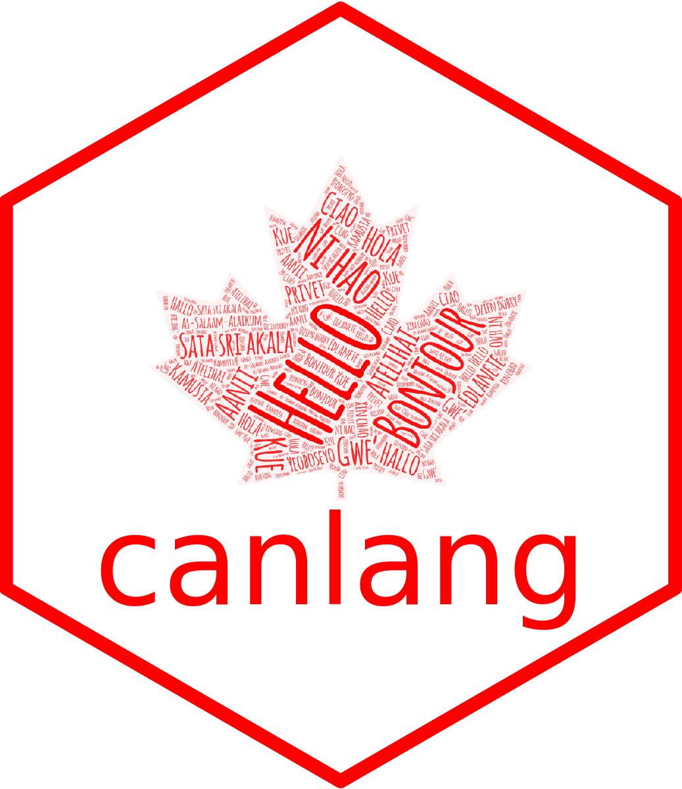
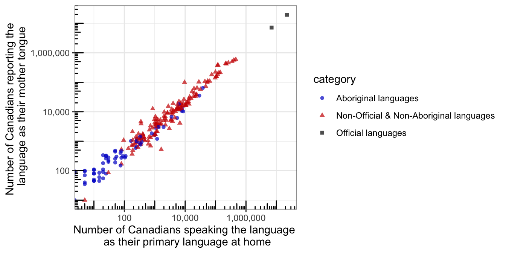

canlang 
The goal of {canlang} is to easily share language data collected in the 2016 Canadian census. This data was retreived from the 2016 Canadian census data set using the {cancensus} R package.
This package contains two data sets:
can_lang: Contains the counts of the total number of Canadians that report each language as their mother tongue, which language they speak most often at home, which language they use most often at work, and which language they have knowledge for.region_lang: For each census division, it contains the counts of how many Canadians report each language as their mother tongue, which language they speak most often at home, which language they use most often at work, and which language they have knowledge for.
Installation
You can install the development version from GitHub with:
# install.packages("devtools") devtools::install_github("ttimbers/canlang")
Example usage of can_lang
The data set can_lang contains the counts of the total number of Canadians that report each language as their mother tongue, which language they speak most often at home, which language they use most often at work, and which language they have knowledge for. This data was recorded in the 2016 Census:
library(canlang) head(can_lang) #> category language #> 1 Aboriginal languages Aboriginal languages, n.o.s. #> 2 Non-Official & Non-Aboriginal languages Afrikaans #> 3 Non-Official & Non-Aboriginal languages Afro-Asiatic languages, n.i.e. #> 4 Non-Official & Non-Aboriginal languages Akan (Twi) #> 5 Non-Official & Non-Aboriginal languages Albanian #> 6 Aboriginal languages Algonquian languages, n.i.e. #> mother_tongue most_at_home most_at_work lang_known #> 1 590 235 30 665 #> 2 10260 4785 85 23415 #> 3 1150 445 10 2775 #> 4 13460 5985 25 22150 #> 5 26895 13135 345 31930 #> 6 45 10 0 120
library(ggplot2) ggplot2::ggplot(data = can_lang, aes(x = most_at_home, y = mother_tongue, colour = category, shape = category)) + geom_point(alpha = 0.7) + scale_color_manual(values = c("blue3","red3","black")) + scale_y_log10(name = "Number of Canadians reporting the \n language as their mother tongue", labels = scales::comma) + scale_x_log10(name = "Number of Canadians speaking the language \n as their primary language at home", labels = scales::comma) + annotation_logticks() + theme_bw()

Plain text, excel and SQLite database files
We have included several different plain text files, an excel files and a SQLite database file in this repo to be used for practice importing from these filetypes. Specifically, they are:
-
can_lang.csv: the same dataset available viacanlang::can_langstored as a vanilla.csvfile. -
can_lang-meta-data.csv: the same dataset available viacanlang::can_langstored as a vanilla.csvfile with two rows of metadata that should be skipped. -
can_lang.tsv: the same dataset available viacanlang::can_langstored as a.tsv(tab separated) file and has no column names. -
can_lang.xlsx: the same dataset available viacanlang::can_langstored as a.xlsxfile. Can be read in using the {readxl} package. -
can_lang.db: the same dataset available viacanlang::can_langstored as a SQLite database (.db) file. Can be read in using the {RSQLite} package.
How this was made
The data-raw directory contains the the scripts necessary to create everything in this package, including the R data objects and the plain text, excel and SQLite database files.
Example usage of region_lang
For each census division, the data set region_lang contains the counts of how many Canadians report each language as their mother tongue, which language they speak most often at home, which language they use most often at work, and which language they have knowledge for.
library(canlang) library(dplyr) region_lang %>% filter(region == "Greater Vancouver (RD)") %>% arrange(desc(mother_tongue)) %>% head() #> # A tibble: 6 x 7 #> region category language mother_tongue most_at_home most_at_work lang_known #> <fct> <chr> <chr> <dbl> <dbl> <dbl> <dbl> #> 1 Greate… Official … English 1316635 1622735 1330560 2289520 #> 2 Greate… Non-Offic… Cantone… 184365 132185 22890 223705 #> 3 Greate… Non-Offic… Mandarin 174920 138680 23190 250175 #> 4 Greate… Non-Offic… Punjabi… 151205 104855 13130 187530 #> 5 Greate… Non-Offic… Tagalog… 66830 30700 635 96295 #> 6 Greate… Non-Offic… Korean 45990 34225 5075 50640
References
Data originally published in:
- Source: Statistics Canada, Census of Population, 2016. Reproduced and distributed on an “as is” basis with the permission of Statistics Canada.
Package development resources:
- von Bergmann, J., Aaron Jacobs, Dmitry Shkolnik (2020). cancensus: R package to access, retrieve, and work with Canadian Census data and geography. v0.3.2.